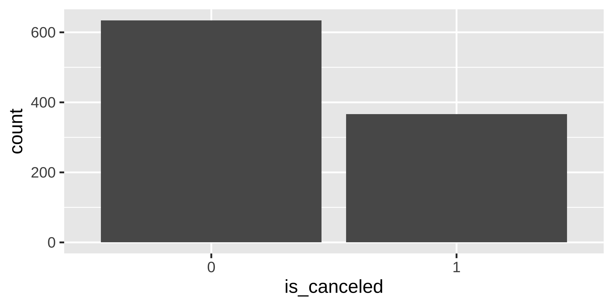
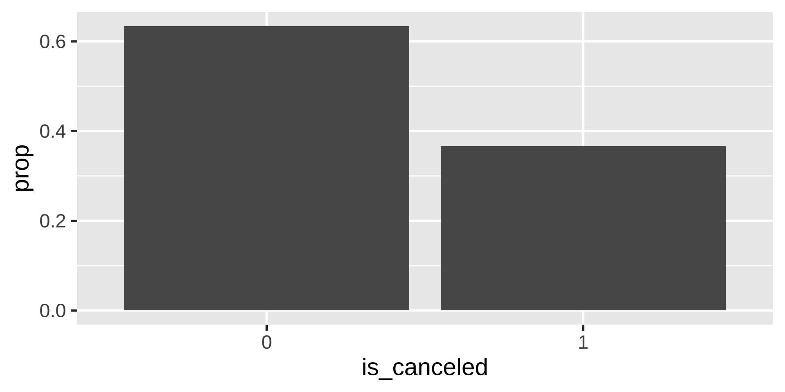
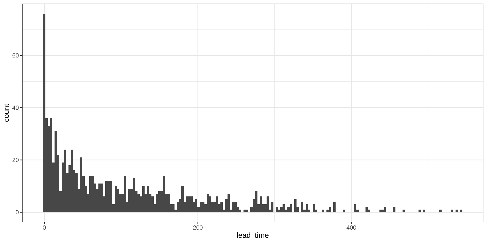
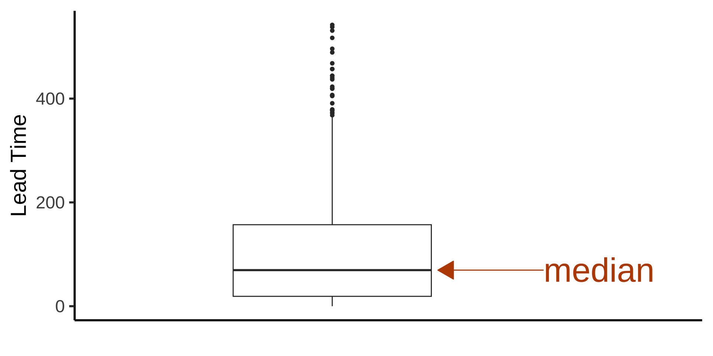
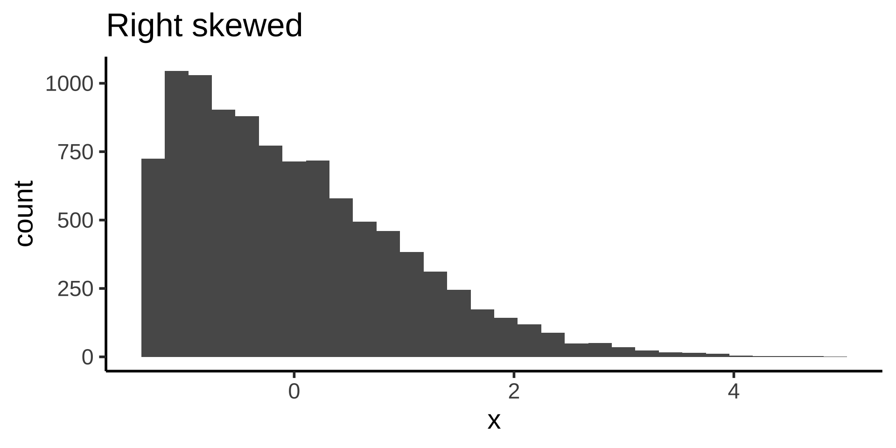
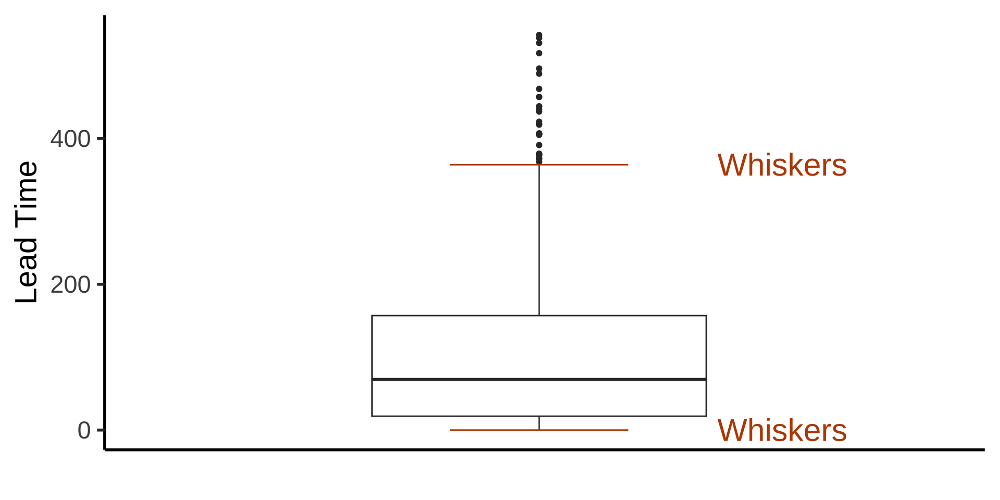
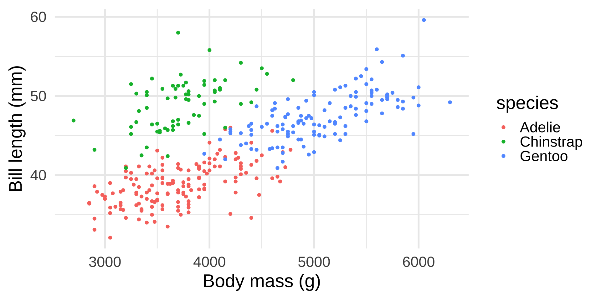

Rows: 1,000
Columns: 32
$ hotel <fct> City Hotel, Resort Hotel, Resort Hotel,…
$ is_canceled <fct> 1, 1, 0, 0, 0, 0, 0, 0, 1, 1, 0, 1, 0, …
$ lead_time <dbl> 1, 19, 9, 110, 329, 212, 14, 58, 88, 37…
$ arrival_date_year <dbl> 2015, 2016, 2017, 2016, 2017, 2017, 201…
$ arrival_date_month <fct> September, March, August, November, Jul…
$ arrival_date_week_number <dbl> 40, 12, 31, 46, 30, 35, 5, 41, 20, 14, …
$ arrival_date_day_of_month <dbl> 30, 19, 1, 11, 27, 31, 29, 3, 17, 5, 22…
$ stays_in_weekend_nights <dbl> 0, 2, 0, 0, 0, 2, 2, 2, 0, 0, 0, 0, 1, …
$ stays_in_week_nights <dbl> 2, 4, 4, 1, 2, 8, 0, 5, 3, 3, 1, 1, 1, …
$ adults <dbl> 1, 2, 2, 2, 2, 2, 1, 2, 2, 2, 1, 2, 1, …
$ children <dbl> 0, 0, 0, 0, 0, 1, 0, 0, 0, 0, 0, 0, 0, …
$ babies <dbl> 0, 0, 0, 0, 0, 0, 0, 0, 0, 0, 0, 0, 0, …
$ meal <fct> BB, BB, HB, BB, SC, BB, BB, BB, SC, BB,…
$ country <fct> PRT, PRT, ESP, BRA, GBR, GBR, PRT, DEU,…
$ market_segment <fct> Offline TA/TO, Online TA, Online TA, On…
$ distribution_channel <fct> TA/TO, TA/TO, TA/TO, TA/TO, TA/TO, TA/T…
$ is_repeated_guest <dbl> 1, 0, 0, 0, 0, 0, 1, 0, 0, 0, 0, 0, 0, …
$ previous_cancellations <dbl> 1, 0, 0, 0, 0, 0, 0, 0, 0, 0, 0, 0, 0, …
$ previous_bookings_not_canceled <dbl> 0, 0, 0, 0, 0, 0, 1, 0, 0, 0, 0, 0, 0, …
$ reserved_room_type <fct> A, D, A, A, A, A, A, A, A, A, A, A, A, …
$ assigned_room_type <fct> A, D, A, A, A, A, D, A, A, A, A, A, A, …
$ booking_changes <dbl> 0, 0, 0, 2, 0, 1, 0, 0, 0, 0, 0, 0, 1, …
$ deposit_type <fct> Non Refund, No Deposit, No Deposit, No …
$ agent <fct> 50, 240, 241, 314, 9, 143, 240, 240, 9,…
$ company <fct> NULL, NULL, NULL, NULL, NULL, NULL, NUL…
$ days_in_waiting_list <dbl> 0, 0, 0, 0, 0, 0, 0, 0, 0, 0, 0, 0, 0, …
$ customer_type <fct> Transient, Transient, Transient, Transi…
$ average_daily_rate <dbl> 98.10, 70.17, 193.40, 36.24, 89.10, 89.…
$ required_car_parking_spaces <dbl> 0, 0, 0, 1, 0, 0, 0, 1, 0, 0, 0, 0, 1, …
$ total_of_special_requests <dbl> 0, 1, 1, 0, 1, 0, 2, 1, 0, 0, 1, 0, 1, …
$ reservation_status <fct> Canceled, Canceled, Check-Out, Check-Ou…
$ reservation_status_date <date> 2015-09-29, 2016-03-02, 2017-08-05, 20…Summarizing Data
Dr. Mine Dogucu
Summarizing Data with Numbers
We will only summarize a single variable at a time but later we will talk about relationship between two variables.
Summarizing Categorical Data
Categorical data are often summarized with a frequency table. Counts or proportions are used to summarize categorical variables.
| TRUE | FALSE | Total Count | |
|---|---|---|---|
| fruity | 47 | 38 | 85 |
| TRUE | FALSE | Total Proportion | |
|---|---|---|---|
| fruity | 0.5529412 | 0.4470588 | 1 |
Summarizing Numerical Data
Consider the following data which represents the number of hours slept for 10 people who were surveyed.
| 7 | 7.5 | 8 | 5.5 | 10 | 7.2 | 7 | 8 | 9 | 8 |
Mean
\[\bar x = \frac{7+7.5+8+5.5+10+7.2+7+8+9+8}{10} = 7.72\]
The mean is calculated by summing the observed values and then dividing by the number of observations.
\[\bar x = \frac{x_1 + x_2+.... x_n}{n}\]
where \(\bar x\) represents the mean of observed values, \(x_1\), \(x_2\), … \(x_n\) represent the n observed values.
Median
If all the observations are listed from smallest to largest (or vice versa), the median is the observation that is in the middle.
| 5.5 | 7 | 7 | 7.2 | 7.5 | 8 | 8 | 8 | 9 | 10 |
In this case, we have two numbers in the middle 7.5 and 8. The average of these numbers would be the median. In this case, the median is 7.75.
\[\frac{7.5 + 8}{2} = 7.75\]
Q1, Q3, and Interquartile Range
You can divide the (ordered) data into four. The median splits the data in half, in other words 50% of the data fall below the median.
First quartile (Q1) is the point at which 25% of the data fall below of. Third quartile (Q3) is the point at which 75% of the data fall below of.
Q1 and Q3 can be considered 25th and 75th percentiles respectively. Interquartile Range (IQR) = Q3 - Q1 which represents the middle 50% of the data.
Quantiles / Percentiles / Quartiles
| Quantile | Percentile | Special Name |
|---|---|---|
| 0.25 | 25th | First quartile |
| 0.5 | 50th | Median |
| 0.75 | 75th | Third quartile |
Standard deviation and Variance
Let’s take a detour. Consider Dr. Dogucu teaching three classes. All of these classes have 5 students. Below are midterm results from these classes.
Class 1: 80 80 80 80 80
Class 2: 76 78 80 82 84
Class 3: 60 70 80 90 100
What do you notice about midterm results?
All of these classes have an average of 80 points. But the data differ! In order to explain how these are different we examine how far off each observed value is from the mean on average. In class 1 all students are at the mean value so there is no variance. Class 2 students deviate from the mean slightly on average. Class 3 has the highest deviation from the mean on average.
Standard deviation and Variance
| \(x_i\) | \(x_i - \bar{x}\) | \((x_i - \bar{x})^2\) |
|---|---|---|
| 5.5 | 5.5-7.72 = -2.22 hr | (-2.2 hr)2 = 4.9284 hr 2 |
| 7 | 7-7.72 = -0.72 hr | (-0.72 hr)2 = 0.5184 hr 2 |
| 7 | 7-7.72 = -0.72 hr | (-0.72 hr)2 = 0.5184 hr 2 |
| 7.2 | 7.2-7.72 = -0.52 hr | (-0.52 hr)2 = 0.2704 hr 2 |
| 7.5 | 7.5-7.72 = -0.22 hr | (-0.22 hr)2 = 0.0484 hr 2 |
| 8 | 8-7.72 = 0.28 hr | (0.28 hr)2 = 0.0784 hr 2 |
| 8 | 8-7.72 = 0.28 hr | (0.28 hr)2 = 0.0784 hr 2 |
| 8 | 8-7.72 = 0.28 hr | (0.28 hr)2 = 0.0784 hr 2 |
| 9 | 9-7.72 = 1.28 hr | (1.28 hr)2 = 1.6384 hr 2 |
| 10 | 10-7.72 = 2.28 hr | (2.28 hr)2 = 5.1984 hr 2 |
Total squared distance from the mean
\(\Sigma_{i = 1}^{n} (x_i - \bar x )^2 =\)
\(4.9284 + 0.5184 + 0.5184 + 0.2704 + 0.0484 +\) \(0.0784 + 0.0784 + 0.0784+ 1.6384 + 5.1984 = 13.356 \text{ hr}^2\)
Note that \(n\) represents the number of observations which means \(n = 10\).
Sample variance
\[s^2 = \frac{\Sigma_{i = 1}^{n} (x_i - \bar x )^2}{n-1}\]
\[s^2= \frac{13.356}{10-1} = 1.484\text{ hr}^2\]
Sample standard deviation
\[s = \sqrt{\frac{\Sigma_{i = 1}^{n} (x_i - \bar x )^2}{n-1}}\]
\[s= \sqrt{1.484} = 1.218195 \text{ hr}\]
Summarizing Data with Numbers in R
Data
Data
# A tibble: 1,000 × 2
is_canceled lead_time
<fct> <dbl>
1 1 1
2 1 19
3 0 9
4 0 110
5 0 329
6 0 212
7 0 14
8 0 58
9 1 88
10 1 373
# ℹ 990 more rowsis_canceled whether the booking was cancelled (0 = FALSE (i.e., not canceled), 1 = TRUE (i.e., not canceled))
lead_time number of days between booking and arrival
Summarizing Categorical Data in R
There are 366 people who canceled their booking and 634 who did not.
Summarizing Categorical Data in R
There are total 1000 bookings. We can use this to calculate the proportions
\(\frac{366}{1000}\)
\(\frac{634}{1000}\)
Mean in R
Median in R
Quartiles
You can specify quartiles (Q3)
Standard Deviation and Variance
Summarizing Data with Visuals
Bar plot with counts
Bar plot with proportions
Histogram
Fun fact
histo comes from the Greek word histos that literally means “anything set up right”.
gram: comes from the Greek word gramma which means “that which is drawn”. 1
Histogram
Consider the height distribution in our class.
How would the distribution change if Michael Jordan (198.1 cm, 6’ 6’’) were to join our class?
How would the distribution change if Tyrion Lannister (Peter Dinklage) (135 cm, 4’ 5’’) were to join our class?
Note
When data display a skewed distribution we rely on median rather than the mean to understand the center of the distribution.
Boxplot
Median

First and Third Quartiles (Q1 and Q3)
Interquartile Range (IQR)
Whiskers
Whiskers can go as high as Q3 + 1.5 IQR and as low as Q1 - 1.5 IQR. In this instance, we see that whiskers have reached its maximum value, however, since there is no observed data below 0 lead time, the lower whisker is at 0.
Meet Palmer Penguins1


Data
Rows: 344
Columns: 8
$ species <fct> Adelie, Adelie, Adelie, Adelie, Adelie, Adelie, Adel…
$ island <fct> Torgersen, Torgersen, Torgersen, Torgersen, Torgerse…
$ bill_length_mm <dbl> 39.1, 39.5, 40.3, NA, 36.7, 39.3, 38.9, 39.2, 34.1, …
$ bill_depth_mm <dbl> 18.7, 17.4, 18.0, NA, 19.3, 20.6, 17.8, 19.6, 18.1, …
$ flipper_length_mm <int> 181, 186, 195, NA, 193, 190, 181, 195, 193, 190, 186…
$ body_mass_g <int> 3750, 3800, 3250, NA, 3450, 3650, 3625, 4675, 3475, …
$ sex <fct> male, female, female, NA, female, male, female, male…
$ year <int> 2007, 2007, 2007, 2007, 2007, 2007, 2007, 2007, 2007…
What can you conclude from this plot?
Scatterplot

What can you conclude from this plot?
Scatterplot

- What can you conclude from this plot?
- How many variables are represented in this plot?
- Are they numeric or categorical?
Summarizing Data with Visuals in R
- Pick your data frame
- Pick variables for the axes (or other aesthetics)
- Specify the geom (i.e., plot type)
Box plot

Scatter plot
Scatter plot